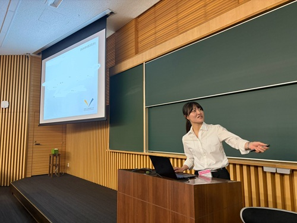
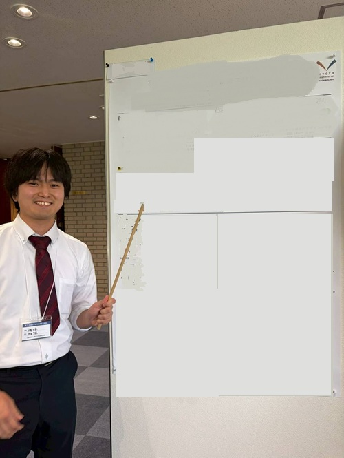
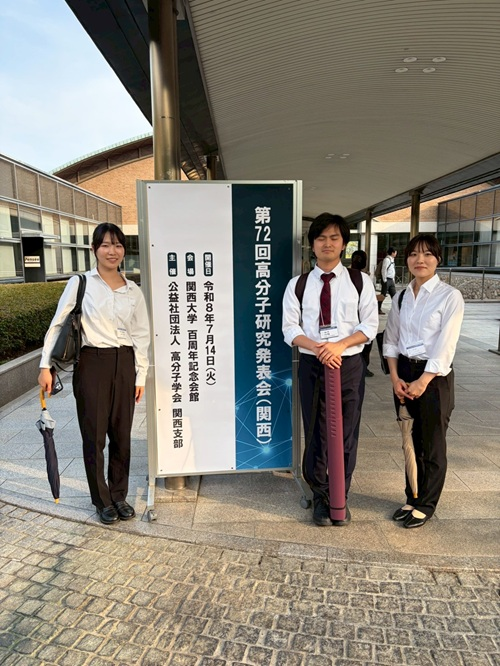
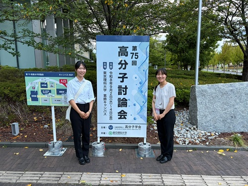

京都工芸繊維大学 応用化学課程 高分子材料デザインコース
高分子合成化学研究室 KAMBAYASHI LAB.
研究室見学・配属を考えている皆さんへ
この研究室について
- 研究：モノマーの設計・合成から新しい重合反応の開発まで、「オリジナルの高分子」をつくる研究をしています。
- 身につけてほしいこと：自分で課題を見つけ、考え、解決する力です。
- 目指す関係：教員と学生が、同じ研究に取り組む共同研究者として議論しながら研究を進めます。
- 来てほしい人：特別な知識や自信はいりません。「自分の手で新しい分子や材料をつくってみたい」という人を歓迎します。
研究について
私たちの研究室では、高分子合成化学を中心とした研究を行っています。
目指しているのは、これまでにない新しい構造や機能を持つ「オリジナルの高分子」を生み出すことです。そのため、既存のモノマーを重合するだけでなく、モノマーの分子設計・合成や、新しい重合反応の開発から取り組みます。
研究には、有機合成化学、有機金属化学、高分子化学など、幅広い化学の知識を活用します。これらの分野に興味がある人はもちろん、「自分の手で新しい分子や材料をつくってみたい」という人も歓迎します。
具体的な研究テーマは、Researchのページで紹介しています。
研究を通じて身につけてほしいこと
研究室での生活を通じて最も身につけてほしいのは、自分で課題を見つけ、考え、解決する能力です。
研究では、教科書に答えが載っているとは限りません。予想通りに実験が進まないことも多く、むしろそのような場面で、何が問題なのかを考え、試行錯誤することが大切です。
最初から一人でできる必要はありません。教員や先輩と議論しながら、少しずつ自分で研究を進められるようになってほしいと考えています。
こうした経験は、将来研究職に進むかどうかにかかわらず、社会に出てからも役立つはずです。


共同研究者として、一緒に研究をつくる
指導教員と学生という立場ではありますが、私たちが目指しているのは、同じ研究に取り組む共同研究者としての関係です。
研究テーマは、教員が決めたことをこなすだけのものではありません。実験結果をいちばん近くで見ているのは、実際に手を動かしている学生自身です。その気づきや考えは、研究を進めるうえで大きな力になります。
実際に、学生の提案をきっかけにテーマの方向性が変わり、より良い研究につながったこともあります。
「こうしたらどうだろう」「この結果はこういう意味ではないか」と思ったことは、遠慮せずに話してください。立場に関係なく議論し、一緒に研究をつくっていきたいと考えています。


世界で初めての発見を目指して
研究の大きな目標の一つは、得られた成果を学会で発表し、学術論文として世界に発信することです。
論文として発表するということは、世界でまだ誰も知らなかった新しい知見を、自分たちの研究によって明らかにするということです。そして、その成果は研究者として自分の名前とともに残ります。
これは決して、一部の特別に優秀な学生だけが目指せるものではありません。実際に、私たちの研究室でも修士1年生の段階で論文発表につながる成果を上げた学生がいます。
学会で評価されるのは、どの大学の学生かではなく、研究の中身です。全国の大学の学生と同じ場で発表し、良い研究には大学名に関係なく注目が集まります。
また、自分で課題を立て、結果を考え、人に筋道を立てて説明する経験は、企業が求める力とも重なります。研究に真剣に取り組んだ経験は、どの進路に進んでも自分の強みになるはずです。
研究成果が必ず論文になるとは限りませんが、せっかく研究に取り組むのであれば、世界に通用する成果を一緒に目指してみませんか。
実験の進め方から結果の考察、学会発表、論文執筆まで、最大限サポートします。
研究室での生活について
私たちの研究は、分子の設計・合成から高分子の構造解析、物性評価まで、一連の実験を積み重ねて進めていきます。成果を得るためには、ある程度まとまった時間と、継続的な取り組みが必要です。
- 研究室での研究は平日が基本で、1日8時間程度がひとつの目安です。
- 決まったコアタイムはありませんが、朝は10時頃までには来るようにしてください。
有機合成の実験は、反応の仕込みから後処理まで、一日の中で計画的に進める必要があります。また、安全のためにも、実験は周りに人がいる時間帯に行うことが大切です。そのため、夜遅くに実験をする生活ではなく、日中にしっかり研究に取り組むリズムを大切にしています。
とはいえ、毎日きっちり8時間を求めているわけではありません。予定があって早めに帰りたい日や、少し休みたい日もあると思います。実験の都合で忙しい日もあれば、余裕のある日もあります。大切なのは「毎日何時間いたか」ではなく、数週間から1か月くらいの期間で見て、研究にしっかり取り組めているかです。
そのため、日々の進め方には一定の自由度があります。数週間から1か月程度の計画を自分で立て、メリハリをつけながら研究を進めてほしいと思っています。
また、研究室は多くの人が一緒に活動する場所です。互いを尊重し、約束を守り、必要なコミュニケーションをとることを大切にしています。特別に社交的である必要はありませんが、周囲への配慮と誠実な姿勢は欠かせません。


研究室の雰囲気は、Photoのページでも紹介しています。
大学院進学について
新しいモノマーの設計から高分子の合成、物性の評価までをやり遂げるには、ある程度の時間がかかります。学部4年生で始めた研究を発展させ、成果としてまとめるためにも、修士課程まで進学して研究を続けてくれることを望んでいます。
最後に
研究室に入る前から、特別な知識や実験技術、自信を持っている必要はありません。
最初は研究の面白さがよくわからなくても、実験を重ね、考え、少しずつできることが増えるうちに、研究が面白くなってくることもあると思います。
大切なのは、わからないことをそのままにせず、自分で考え、一歩ずつ挑戦してみようとする姿勢です。
今の自分に何ができるかだけでなく、
研究室で何ができるようになるかを大切にしてほしいと思っています。
研究に興味がある人は、ぜひ一度、研究室を見に来てください。